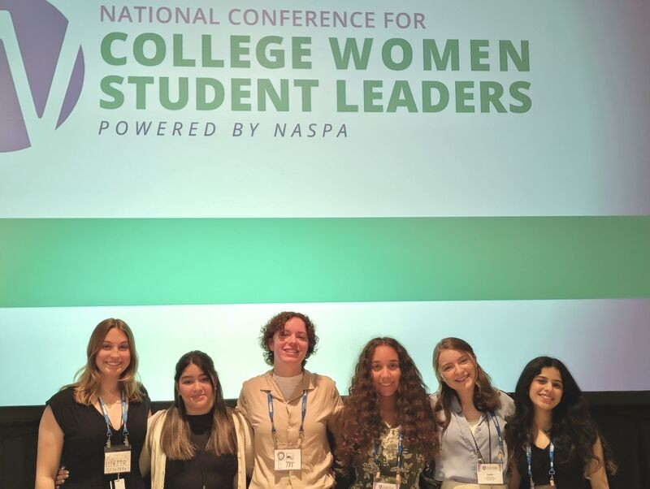
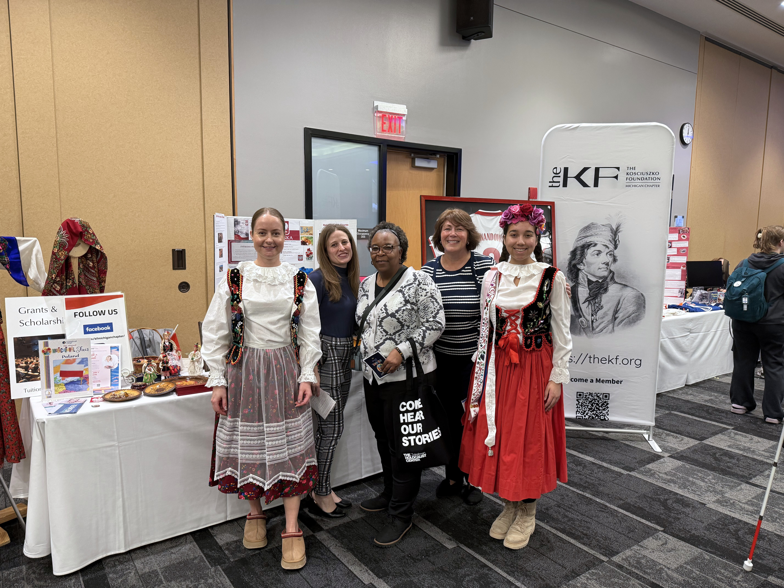

- Revitalized the engineering club from inactivity and served as the president.
I started the club as a non-engineering major because I wanted to explore engineering as an option. When I found out the club was inactive, I thought to myself, "Welp, someone's got to do it. Might as well be me." I learned so much about being a leader, and I tried to set an example by being very vocal whenever I didn't understand something.
The club eventually grew to 17 active members in just one academic year. We also welcomed guest speakers from Ford, Roush, and Bosch, and even had two club field trips. This club became such an important community to me while I was at Schoolcraft.


- Worked as a student employee at the campus help desk
I began applying for jobs on campus after my first semester, hoping to gain some experience and clarity. After applying for an office position, I received an email: “Hi Sara, the position you applied for was filled. However, a position opened up in IT, would you be interested?”
Thus, I found myself at an interview for a job that I had no qualifications for. At the time I had no technical experience at all; most of my family had a career in business, and my own academic background was in the arts. I simply couldn’t imagine a scenario in which I would actually be offered the job. As the interview came to a close, I was caught completely off guard when I heard, “We're gonna give you the position”.
While working at the help desk, I was able to help faculty on campus troubleshoot various technology issues among projects that would be given to me. This job was so fun! I got to go on field trips around the campus, learn about how various technology worked, and connected with so many individuals on campus. I was also nominated for student employee of the year in the "Social Impact" category. 🙂 This job made me feel capable of pursing a technical career and helped me learn so much about myself!


- Selected to attend the national conference for college women student leaders (NCCWSL)
The American Association for University Women (AAUW) Livonia branch sponsored a small handful of female students from an applicant pool to attend NCCWSL. We were flown to Maryland, where attendees stayed in dorms throughout the 3-day event. The conference involved various seminars and speakers that highlighted leadership. Attendees were able to hear from distinguished female leaders, network, and participate in leadership development activities.

- Volunteered!
Schoolcraft hosts an annual multicultural fair, in which I volunteered twice! The first year I volunteered to paint an art piece that represented black culture that would be set up at a booth represnting the Charles H. Wright museum of African American History. I was tasked with prompting guests to participate in mini quizzes, tell facts about black history, and pass out prizes.
The second year of the fair, I volunteered to represent Poland. I dressed up in struj ludowyy and passed out pierogi to fair attendees. I also created a slideshow demonstrating fun facts about Poland and taught basic Polish vocabulary to fair attendees.

- Had the oppurtunity to work at an internship through the "Culture Corps" program
During my internship at Culture Corps, I was a Production Assistant at the Metropolitan Museum of Design Detroit. My responsibilities included conducting research, applying biomimicry subjects of interest, writing a full RFP, designing a press release, and assisting with events featuring the museum. I was able to assist with various networking events related to design. My favorite part of this internship was an event in which the museum taught students a lesson about designing with recycled materials at Green Living Science in Detroit.